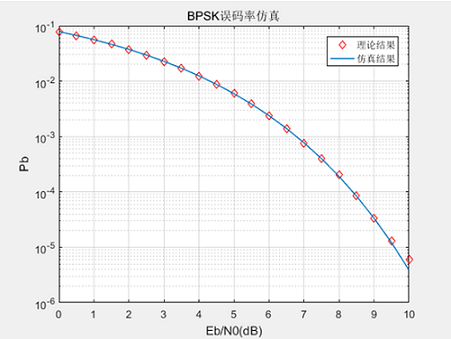
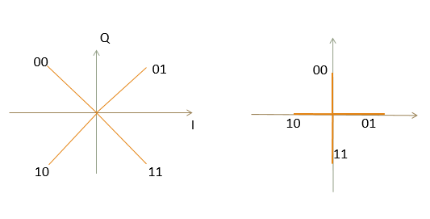
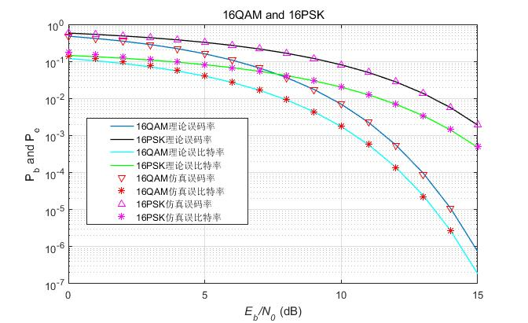

拖延几日，不觉课程已结课几天了，在此趁着脑中还有些关于课程内容的印象，简单写一篇记录，关于如何使用MATLAB构建一个调制技术的仿真程序。
BPSK
首先来看最简单的二进制仿真，以 BPSK 为例，我们来看看如何搭建一个仿真仿真程序，从中得到些一般的仿真设置方法。
在进行仿真之前，先看看我们期待需要得到的是什么——BPSK的误码率 Pe 随信噪比 SNR 的变化曲线，那么这个图像的横坐标就是信噪比，纵坐标就是误码率。这里面还有一个问题需要提前考虑，老师也在上课的时候强调过让我们去思考，即 SNR 和 $\frac{E_b}{N_0}$ 的关系，我们的结论是 $SNR=2\frac{E_b}{N_0}$，这里面有一个从带通等效到低通的过程，同时把基带波形的因素也进行一般化，具体的我只是有一个模糊的概念，等我真的理解了，有机会再来补上吧。最终我们要画的就是 Pe 随 $\frac{E_b}{N_0}$ 的变化曲线。
这里直接给出理论值计算公式，具体推导并不复杂。
$$
P_e=\frac{1}{2}erfc(\frac{E_b}{N_0})
$$
接下来的问题在于我们如何通过 $\frac{E_b}{N_0}$ 定量描述噪声和信号的大小，在仿真中我们需要实际比较噪声和信号幅度的大小确定最终的判定结果。
先来看一个比较笨的办法，这个办法并不具有一般性，它没有使用到一个特别重要的东西——星座图，后续我会利用星座图给出一个更加简单的方法。考虑如下这个公式：
$$
SNR = \frac{P_s}{P_n}=\frac{E_b/T_s}{N_0\cdot B}\times log_2(M)=\frac{E_b}{N_0}=\frac{a^2}{2\sigma^2}
$$
信号幅度a=1，则立即可以得到噪声功率
$$
\sigma^2=\frac{1}{2E_b/N_0}
$$
BPSK 的基带信号是双极性的，用 -1 和 +1 来表示两种不同极性的信号，前面已经得到噪声的功率，那么信号加上噪声幅度就得到接收信号。这就是关键之处，确定信号和噪声的定量关系，已经噪声该如何加到信号上，明白了这个，其余都很简单。最终我们可以得到如下的代码：
1 | EbN0dB = 0:1:10; |
得到的结果如下所示：

第二种方法更具有一般性，理解了它，其他调制方式也是一样的可以实现。这需要星座图的帮助，通过星座图，我们可以得到最小欧式距离和平均比特能量的关系。在 BPSK 中，有
$$
d_{min}=\sqrt{4E_b}
$$
同时，$\frac{d_{min}}{2}$ 也正是信号的幅度，令 $d_{min}=2$，则信号的幅度为 $a=1$，由 $\frac{E_b}{N_0}$ 和 $d_{min}$ 与 $E_b$ 的关系，我们可以得到
$$
N_0=\frac{E_b}{E_b/N_0}=\frac{d_{min}^2}{4}\cdot\frac{1}{E_b/N_0}
$$
那么噪声功率就是$\sigma^2=\frac{N_0}{2}$。然后按照第一种方法的思路去编写仿真程序即可，非常简单。再来说说它的通用性，使用星座图仿真 AWGN 信道下的调制方式，我们首先需要确定最小欧式距离和平均比特能量的关系，然后得到噪声功率即可，这样就可以得到信号和噪声的定量关系，进行仿真即可。
QPSK
利用上面提到的具有一般性的方式，我们需要使用星座图，QPSK有如下两种星座图形式：

以第一种左边的星座图为例，说明仿真过程。对于 MPSK 调制，最小欧式距离为：
$$
d_{min}=2\sqrt{(log_2M\times sin^2\frac{\pi}{M})\varepsilon_b}
$$
在 QPSK 中，M=4，则 $d_{min}=2\sqrt{\varepsilon_b}$。注意到这和之前的 BPSK 不一样，我们可以将 QPSK 看作两路正交的相位调制叠加。仿真中我们令 $d_{min}=2$，则$\varepsilon =1$，进而可以得到两路信号的幅度都是1，同时还可以确定噪声功率为 $\sigma^2 = \frac{1}{2SNR}$。按照上面的仿真思路我们很容易可以写出代码，最终得到的图形如下所示。
16QAM 和 16PSK
同理，对16QAM和16PSK也是一样的道理，只不过星座点映射在代码实现上会稍稍复杂一点。分析 16QAM 可以将它看作两路正交的 4PAM 信号的叠加，其余分析方法和上面完全相同。16PSK 就更加简单了，不多说，直接给出代码和最终的波形图，如下所示。

1 | clear all; |